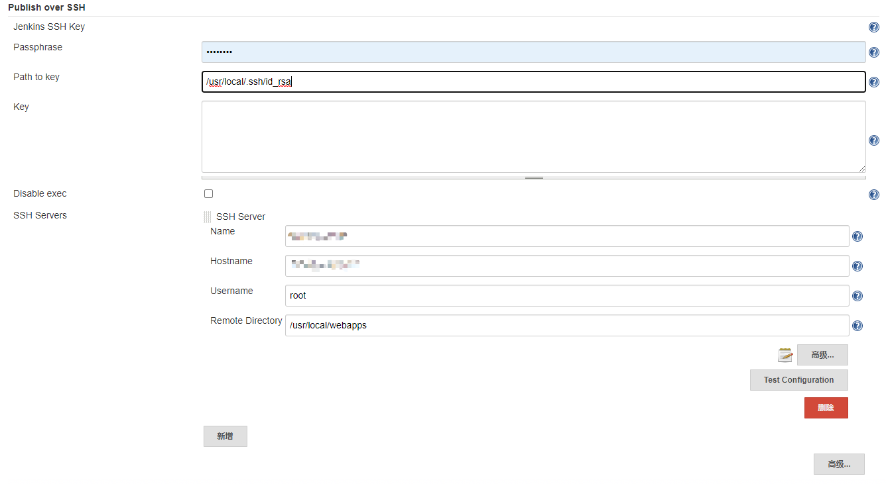
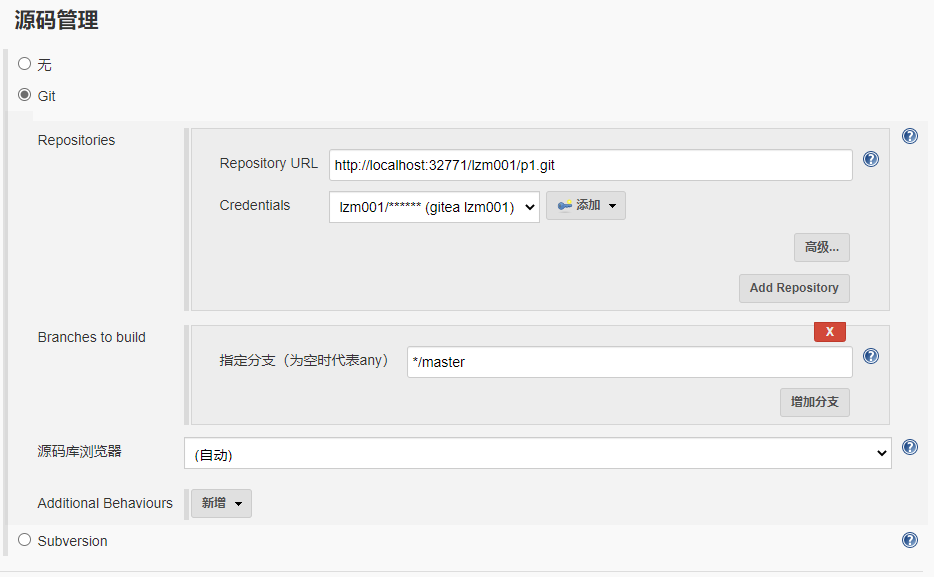
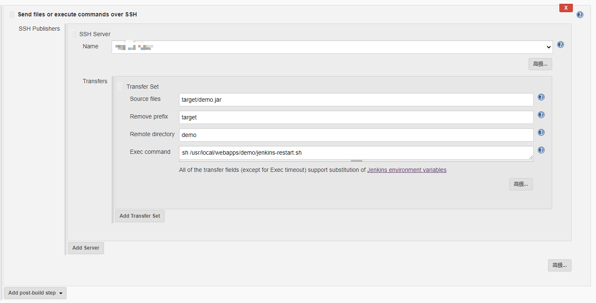

Jenkins配置Maven项目CI
需要提前准备三个服务器（或者自己想办法用虚拟机或者 Docker 等）：Jenkins 服务器，GitLab 服务器，项目发布服务器。
Jenkins 服务器提前装好 JDK，Maven，Git 等环境，项目发布服务器提前装好 JDK 等环境并开启 22 和 8080 端口，Jenkins 提前安装 Publish Over SSH，Maven Integration，Git 等插件。
上传最简单的 Spring Boot Web 项目到 GitLab
创建 Spring Boot Web 项目，新增 controller：
package xyz.liuzhuoming.demo; |
然后项目上传到 GitLab。
配置项目发布服务器
创建项目启动脚本
在/usr/local 目录下创建 webapps/demo 目录，并创建 jenkins-restart.sh 文件（**点击下载**）：
|
其中8080对应自己项目的server.port，demo.jar对应自己项目的打包名称（可以通过 pom.xml 的build.finalName来修改）。
创建用于 SSH 的 RSA 密钥
生成 RSA 密钥及导入密钥过程略。
保存私钥文件 id_rsa 到开发机任意位置备用。
配置 Jenkins 服务器
上传项目发布服务器用于 SSH 的私钥文件
上传刚才保存的私钥文件 id_rsa 到密钥文件路径（比如/usr/local/.ssh/id_rsa 之类的）
配置 Maven 项目所需环境
配置位置在Manage Jenkins->Global Tool Configuration。JDK：配置本机 JAVA_HOME 地址，Maven：配置本机 MAVEN_HOME 地址，Git：配置本机 Git 执行文件地址（直接写 git 也可以，会去默认位置查找 Git 执行文件）。
配置 SSH
配置位置在在Manage Jenkins->Configure System。
配置Publish over SSH：
其中Passphrase：配置密钥密码（如果有的话，没有为空），Path to key：配置密钥文件路径（比如/usr/local/.ssh/id_rsa 之类的），Key：配置密钥文件内容（和上面选一个就可以了）。
然后点击Add SSH Server，Name：配置自定义的服务名称（比如 test-server），Hostname：配置项目发布服务器 ip，Username：配置登陆用户名，Remote Directory：配置 Jar 文件上传后的根目录（比如/usr/local/webapps/），如果端口不是 22 就在高级选项里面配置Port。
之后保存。

配置 Maven 项目
点新建Item，选择构建一个maven项目，确定。
然后配置源码管理->Git->Repositories：Repository URL：里面填写 Git 项目仓库地址，如果是私有仓库，需要点击添加添加 Jenkins 凭证，填写 GitLab 的账号密码即可，之后在Credentials下拉框选择刚才新增的凭证。

然后配置Post Steps：
点击Add post-build step，
在下拉框选择Send files or execute commands over SSH，然后在SSH Publishers点击Add Server，Name：选择上一步Publish over SSH->SSH Server里面配置的服务名称（比如 test-server），
然后在Transfers点击Add Transfers Set，Source files：为 SpringBoot 项目根目录下打包 Jar 包的位置（比如 target/demo.jar），Remove prefix：为除了 Jar 包名之外的路径（比如 target），Remote directory 为项目发布服务器放 Jar 包的相对地址（在上一步Publish over SSH->SSH Server里面配置的 Jar 文件上传后的根目录（比如/usr/local/webapps/）之下），Exec command：为 Jar 包上传到项目发布服务器之后运行的命令（配置运行项目启动脚本就可以了，比如 sh /usr/local/webapps/demo/jenkins-restart.sh）。
保存。

构建并发布
进入 test-server 工程里面点击Build Now按钮，左下角会出现一个构建进度条，点进控制台输出可以看构建和发布进度，如果没有报错并且最后一句提示SSH: Transferred 1 file(s)就是构建并发布成功了。
然后访问项目发布服务器 ip:8080 就可以看到页面显示i is fishs!。
然后在 Spring Boot 项目里面的 TestController 修改i is fishs!为you dead并提交到 GitLab，然后在 Jenkins 的 test-server 工程点击Build Now按钮，点进去可以看到本次 Git 提交的 commit 内容，并且等到构建和发布完成之后，访问项目发布服务器 ip:8080 就可以看到页面显示you dead。
本文是maozhijie的原创文章，转载请提前告知作者并且标明出处。
内容遵循 署名-非商业性使用-相同方式共享 4.0 国际 CC BY-NC-SA 4.0 协议。